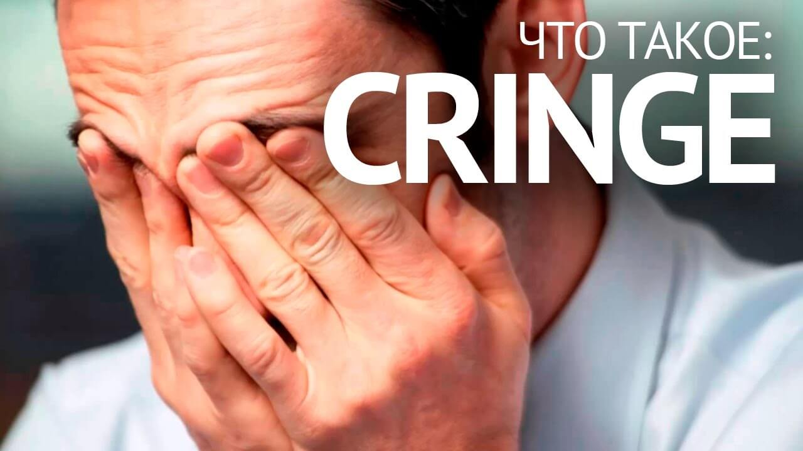
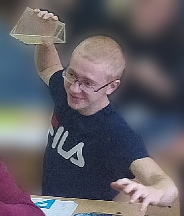
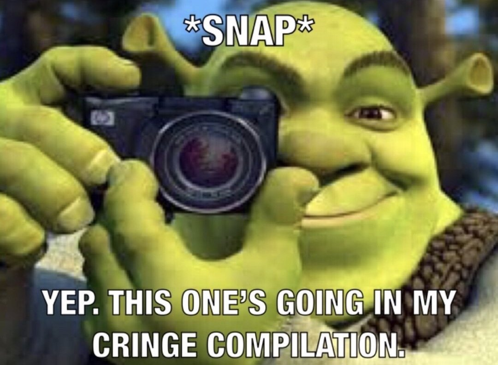

What is your KRINJ???

What is your KRINJ???
Английский язык – основной поставщик заимствований для русского языка и особенно для молодежного сленга. Так было раньше, так есть сейчас. Когда-то продвинутые подростки хиляли по стриту, найтовали и носили шузы. Теперь все ловят хайп, чатятся, чилят, рофлят, а иногда и кринжуют.
Что такое кринж в молодёжном сленге? Да, это сленговое слово и, как многие заимствования, оно тоже пришло в современный русский язык из английского. Глагол «to cringe» дословно переводится как «содрогнуться» или «съежиться». Носители языка изначально использовали его для выражения отвращения или страха. Однако позже оно обрело и другие смыслы, благодаря молодежному сленгу.
Так что такое кринж простыми словами? Синонимов в литературном языке много – мерзость, гадость, досада и так далее. Нередко это слово заменяет другое устойчивое выражение: «испанский стыд», когда посторонний человек ведет себя глупо или плоско шутит, но от его поведения неловко вам.
У слова «кринж» синонимы есть и среди других сленговых выражений. Так, в значении «стыд»» в качестве альтернативы можно употреблять «зашквар». Кроме того, в качестве синонима используется слово «трэш» – например, для описания абсурдной ситуации.
Cлово «кринж» часто встречается в комментариях под постами или видеороликами в интернете. Обычно оно значит, что контент не нравится пользователям. Более того: он им отвратителен. «Это тотальный кринж. Помогите мне это развидеть!» – восклицает в таких случаях раздосадованный пользователь. «Да вообще полная дичь», – вторят ему другие.
Нередко понятие используется в словосочетаниях вроде «поймать/словить кринж». «Смотрю, ловлю кринж, это какой-то трэш», – пример коммента под клипом на YouTube, который явно не понравился пользователю. Наверняка комментатор поставил этому видео «диз» (дизлайк).
По мере вхождения в оборот кринж стали использовать не только как существительное, но и как прилагательное (кринжовый) или наречие (кринжево). Встречается оно и в форме глагола, как и кринж на английском: «Чел, ну ты мне и видос бросил, я кринжанул».
Бывает, что этим словом описывается не только качество самого контента, но и уместность его появления: «Брать такие интервью в XXI веке – полный кринж». Иными словами, комментирующий пристыдил автора в том, что видео несовременное и ненужное.
Отвратительного контента в социальных сетях и на видеохостингах сейчас хоть отбавляй, так что возможностей кринжевать у пользователей – море. Поэтому и составляются различные подборки вроде «самые кринжовые песни» или «лучшие кринжи тик ток».
Появляются также понятия вроде кринж мем – отвратительный или стыдный образ, который тиражируется в различных вариантах (на фотоколлажах, видео и так далее). Как правило, в этом случае пользователям не нужно объяснять смысл контента – все, или, по крайней мере, многие, и так его понимают.
Иногда кринж может стать инструментом троллинга, когда автор видео изначально намерен вызвать у аудитории отвращение. Известным примером может служить клип «Ибица» с участием Филиппа Киркорова и Николая Баскова, снятый в 2018 году. Тогда он вызвал неслабые кринжи у большинства зрителей, на что, собственно, и рассчитывали создатели.
